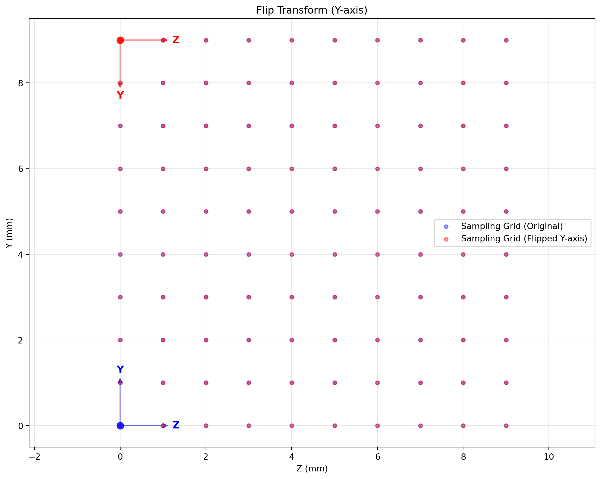

import numpy as np
import matplotlib.pyplot as plt
from spacetransformer.core import Space
# 创建一个标准的规范采样网格
standard_space = Space(
shape=(1, 10, 10), # 三维网格，第一维度为1用于2D可视化
origin=(0.0, 0.0, 0.0), # 物理原点
spacing=(1.0, 1.0, 1.0), # 各向同性1mm采样
x_orientation=(1.0, 0.0, 0.0), # X轴方向
y_orientation=(0.0, 1.0, 0.0), # Y轴方向
z_orientation=(0.0, 0.0, 1.0) # Z轴方向
)
# 展示标准规范采样网格Space概念详解
Space概念：完整的3D图像几何描述
每一幅医学图像都对应着物理世界中的一个规范采样网格。SpaceTransformer通过Space对象的六个要素来完整描述这个网格：形状、原点、间距和三个方向向量。
为了直观展示Space变换效果，我们实现2D网格可视化：
def visualize_sampling_grid(space, color='blue', show_axes=True, label_suffix=''):
"""
可视化采样网格的2D投影（绘制所有采样点）
Args:
space: Space对象
color: 绘制颜色
show_axes: 是否显示坐标轴
label_suffix: 标签后缀，用于区分不同的网格
"""
# 提取Y-Z平面的信息（忽略X维度）
shape_yz = space.shape[1:3] # (height, width)
# 创建所有索引点的网格
y_indices, z_indices = np.meshgrid(
np.arange(shape_yz[0]),
np.arange(shape_yz[1]),
indexing='ij'
)
# 构建3D索引点（X维度设为0）
index_points = np.stack([
np.zeros_like(y_indices.flatten()), # X=0
y_indices.flatten(), # Y索引
z_indices.flatten() # Z索引
], axis=1)
# 转换为世界坐标
world_points = space.to_world_transform.apply_point(index_points)
# 绘制采样点
plt.scatter(world_points[:, 2], world_points[:, 1],
c=color, alpha=0.4, s=20, label=f'Sampling Grid{label_suffix}')
if show_axes:
# 显示原点和坐标轴方向
origin_world = space.to_world_transform.apply_point([[0, 0, 0]])[0]
plt.plot(origin_world[2], origin_world[1], 'o',
color=color, markersize=8, alpha=0.8)
# 计算坐标轴长度（增加长度使其更明显）
axis_length = 1
# Y轴方向（在图中是垂直方向）
y_axis_end = origin_world[1:3] + np.array(space.y_orientation[1:3]) * axis_length
plt.arrow(origin_world[2], origin_world[1],
y_axis_end[1] - origin_world[2], y_axis_end[0] - origin_world[1],
head_width=axis_length*0.1, head_length=axis_length*0.1,
fc=color, ec=color, alpha=0.7)
# Y轴文字标注（偏移避免被箭头遮挡）
y_text_offset = np.array(space.y_orientation[1:3]) * axis_length * 0.3
plt.text(y_axis_end[1] + y_text_offset[1], y_axis_end[0] + y_text_offset[0], 'Y',
fontsize=12, color=color, ha='center', va='center', weight='bold')
# Z轴方向（在图中是水平方向）
z_axis_end = origin_world[1:3] + np.array(space.z_orientation[1:3]) * axis_length
plt.arrow(origin_world[2], origin_world[1],
z_axis_end[1] - origin_world[2], z_axis_end[0] - origin_world[1],
head_width=axis_length*0.1, head_length=axis_length*0.1,
fc=color, ec=color, alpha=0.7)
# Z轴文字标注（偏移避免被箭头遮挡）
z_text_offset = np.array(space.z_orientation[1:3]) * axis_length * 0.3
plt.text(z_axis_end[1] + z_text_offset[1], z_axis_end[0] + z_text_offset[0], 'Z',
fontsize=12, color=color, ha='center', va='center', weight='bold')
def setup_plot(figsize=(10, 8)):
"""设置绘图的通用参数"""
plt.figure(figsize=figsize)
def finalize_plot(title):
"""完成绘图的通用设置"""
plt.xlabel('Z (mm)')
plt.ylabel('Y (mm)')
plt.title(title)
plt.grid(True, alpha=0.3)
plt.axis('equal')
plt.legend()
plt.tight_layout()
plt.show()
# 可视化标准网格
setup_plot()
visualize_sampling_grid(standard_space, color='blue')
finalize_plot('Standard Sampling Grid (10x10, 1mm resolution)')空间变换操作演示
形状变换（Resize）
# 创建不同分辨率的采样网格
high_res_space = standard_space.apply_shape((1, 20, 20))
low_res_space = standard_space.apply_shape((1, 5, 5))
setup_plot()
# 低分辨率对比
visualize_sampling_grid(standard_space, color='blue', label_suffix=' (Original)')
visualize_sampling_grid(low_res_space, color='red', label_suffix=' (5x5)')
finalize_plot('Low Resolution Transform (10x10 → 5x5)')翻转变换
# 创建翻转的采样网格
flipped_space = standard_space.apply_flip(axis=1) # 沿Y轴翻转
# 可视化翻转变换的overlay效果
setup_plot()
visualize_sampling_grid(standard_space, color='blue', label_suffix=' (Original)')
visualize_sampling_grid(flipped_space, color='red', label_suffix=' (Flipped Y-axis)')
finalize_plot('Flip Transform (Y-axis)')
轴交换变换
# 创建轴交换的采样网格（创建非正方形网格以显示效果）
rect_space = Space(
shape=(1, 6, 12), # 矩形网格
origin=(0.0, 0.0, 0.0),
spacing=(1.0, 1.0, 1.0),
x_orientation=(1.0, 0.0, 0.0),
y_orientation=(0.0, 1.0, 0.0),
z_orientation=(0.0, 0.0, 1.0)
)
swapped_space = rect_space.apply_swap(1, 2) # 交换Y轴和Z轴
# 可视化轴交换变换的overlay效果
setup_plot()
visualize_sampling_grid(rect_space, color='blue', label_suffix=' (Original 6x12)')
visualize_sampling_grid(swapped_space, color='red', label_suffix=' (Swapped Y↔Z 12x6)')
finalize_plot('Axis Swap Transform (Y ↔ Z)')旋转变换
# 创建旋转的采样网格
rotated_space = standard_space.apply_rotate(axis=0, angle=30, unit='degree', center='center')
# 可视化旋转变换的overlay效果
setup_plot()
visualize_sampling_grid(standard_space, color='blue', label_suffix=' (Original)')
visualize_sampling_grid(rotated_space, color='red', label_suffix=' (Rotated 30°)')
finalize_plot('Rotation Transform (around X-axis 30°)')边界框裁剪
# 定义裁剪区域并应用变换
crop_bbox = np.array([[0, 1], [2, 8], [2, 8]]) # X, Y, Z范围
cropped_space = standard_space.apply_bbox(crop_bbox)
# 可视化裁剪变换的overlay效果
setup_plot()
visualize_sampling_grid(standard_space, color='blue', label_suffix=' (Original)')
visualize_sampling_grid(cropped_space, color='red', label_suffix=' (Cropped ROI)')
finalize_plot('Bounding Box Crop (6x6 ROI)')
复杂变换链
# 演示复杂变换链的抽象规划
complex_target_space = (standard_space
.apply_bbox(np.array([[0, 1], [2, 8], [2, 8]])) # 裁剪到中心区域
.apply_shape((1, 12, 12)) # 重采样到12×12
.apply_rotate(axis=0, angle=45, unit='degree') # 旋转45度
)
# 可视化复杂变换链的overlay效果
setup_plot()
visualize_sampling_grid(standard_space, color='blue', label_suffix=' (Original)')
visualize_sampling_grid(complex_target_space, color='red', label_suffix=' (Crop→Resample→Rotate)')
finalize_plot('Complex Transform Chain (Crop → Resample → Rotate)')float-point bbox sampling
float_bbox_space = standard_space.apply_float_bbox(np.array([[0, 1], [2.5, 5.5], [2.5, 5.5]]), (12, 12, 12))
setup_plot()
visualize_sampling_grid(standard_space, color='blue', label_suffix=' (Original)')
visualize_sampling_grid(float_bbox_space, color='red', label_suffix=' (Float Bounding Box)')
finalize_plot('Float Bounding Box Sampling (6x6 ROI)')Space抽象框架的核心优势
设计理念：Space中心 vs Transform中心
SpaceTransformer采用”Space中心”的设计理念，区别于torchvision等库的”Transform中心”模式。这一设计选择基于医学图像处理的本质特征：所有的对象的坐标都被世界坐标系定义。
Space中心设计：每个数据对象（图像、点集、掩膜）都绑定唯一的空间描述符。当两个对象需要进行空间对齐时，通过比较它们的Space属性即可自动生成精确的变换关系。
Transform中心的局限性：变换操作本质上是相对的，缺乏绝对的空间基准。这导致多对象间的空间关系难以维护，容易产生累积误差。
技术实现：规划与执行分离
Space类实现了空间变换的规划阶段与执行阶段的完全解耦：
规划阶段：通过链式调用构建复杂的变换序列，所有操作都在抽象的几何空间进行，无需涉及实际像素数据。
执行阶段：warp_image函数分析完整的变换链，自动选择最优的插值路径，通过单次采样完成所有变换。
实际收益
几何精度保障：变换顺序不再影响最终结果。例如”旋转→缩放”与”缩放→旋转”在Space层面完全等价，避免了传统方法中由于采样边界限制导致的信息丢失。
内存效率优化：消除了传统多步骤变换中的中间缓存需求。每个中间步骤都需要完整的图像内存拷贝，而Space方法仅在最终执行时分配一次目标内存。
架构简洁性：库中的warp_xxx接口处理所有类型的空间变换，无需针对不同数据类型（图像、点集、掩膜）维护独立的、复杂的变换逻辑。
接口易用性：相比SimpleITK需要手动配置采样参数的复杂流程，SpaceTransformer提供了语义化的变换接口，同时保留了高级用户的底层控制能力。